Bold = presenting/corresponding author. * = co-first authorship. Full list on Google Scholar.
Under Review / In Preparation
-
 D. Choi, H. J. Wallace, P. Singh, C. Bose & S. M. Bhamla, "Bi-objective Bayesian optimization of soft nozzle geometry for rotary propeller," In preparation.
D. Choi, H. J. Wallace, P. Singh, C. Bose & S. M. Bhamla, "Bi-objective Bayesian optimization of soft nozzle geometry for rotary propeller," In preparation. -
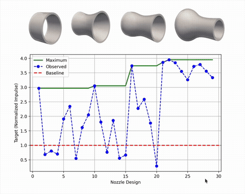
P. Singh, Y. Karki, V. Hernandez, D. Choi, S. Bhamla & C. Bose, "Multi-objective Bayesian optimization of rigid and flexible nozzles for energy-efficient pulsed jet propulsion," arXiv:2606.19252 (2026). Under review. arXiv -
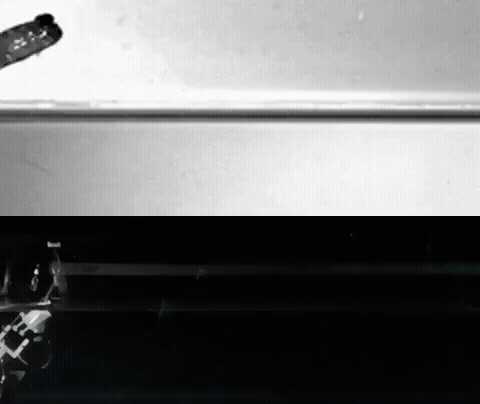
D. Choi, K. L. Yung, H. Wallace, J. Harrison & M. S. Bhamla, "Interfacial dynamics on the water-hopping behavior of mudskipper," In preparation. -
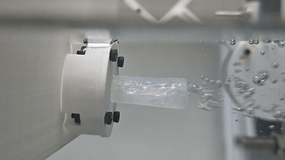
D. Choi*, P. Singh, I. Bergerson, M. Kim, J. Park, H. J. Wallace, K. Zhang, S. Y. Hsieh, A. T. Asberry, T. A. Uyeno, W. F. Gilly, H. Park, D. Kang, C. Bose & M. S. Bhamla, "Squid-inspired soft superpropulsion," arXiv:2605.03239 (2026). Under review. arXiv -
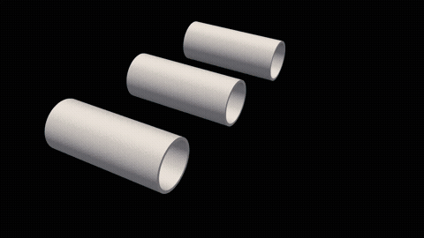
P. Singh*, D. Choi*, M. S. Bhamla & C. Bose, "Elastic wave propagation governs impulse enhancement in pulsed jets through flexible nozzles," arXiv:2605.17319 (2026). Under review. arXiv -
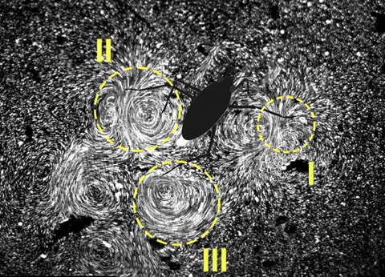
P. Rohilla, J. N. O'Neil, C. Bose, V. M. Ortega-Jimenez, D. Choi & M. S. Bhamla, "Epineuston vortex recapture enhances thrust in tiny water skaters." Under review. bioRxiv
Refereed Journal Articles
-
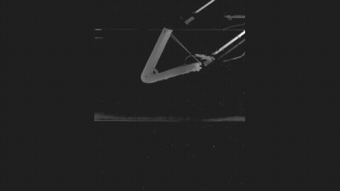
P. Rohilla*, D. Choi*, H. Wallace, K. L. Yung, J. Deora, A. Lele & M. S. Bhamla, "Mastering the Manu – How humans create large splashes," J. R. Soc. Interface, 15, 2 (2025). PDF
Press: Georgia Tech News · PBS NewsHour · Science News -
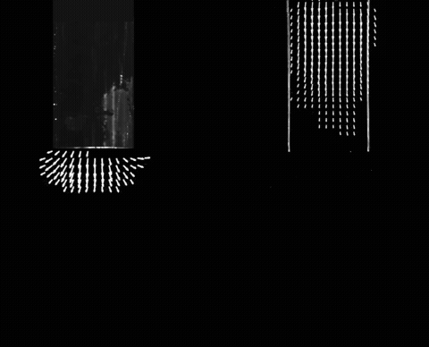
-
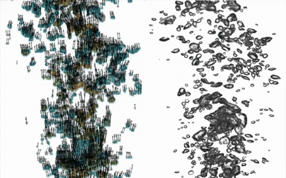
-
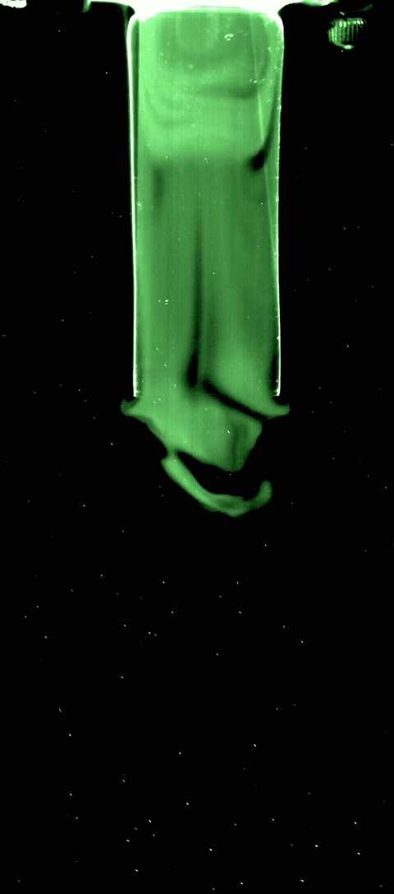
-
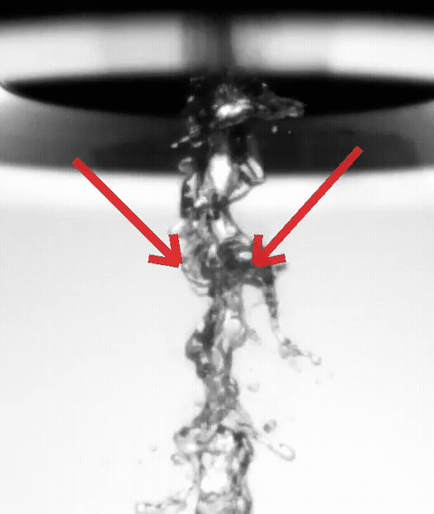
-
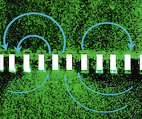
-
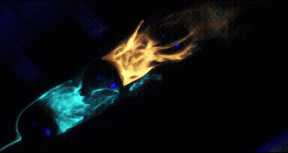
Conferences & Seminars
- "Hydrodynamics of water-hopping behavior of mudskippers," SICB 2026, Oral (Symposium), USA, 2026.
- "Squid-inspired flexible nozzles improve thrust in rotary propulsors using a multi-fidelity approach," SICB 2026, Oral, USA, 2026.
- "Squid funnel-inspired passively flexible nozzles for underwater propulsion," SICB 2026, Oral, USA, 2026.
- "Geometrical effects of free-end nozzles on wave reflection in self-oscillating flexible nozzles," APS-DFD 78th, Houston, USA, 2025.
- "Volumetric 3D PTV for simultaneous flow and deformation measurements in a flexible nozzle," APS-DFD 78th, Houston, USA, 2025.
- "Optimizing jet impulse by tuning the wave propagation in bio-inspired flexible nozzles," APS-DFD 78th, Houston, USA, 2025.
- "Multi-fidelity approach for thrust enhancement in bio-inspired nozzles for underwater vehicles using LES and experiments," APS-DFD 78th, Houston, USA, 2025.
- "Bio-inspired flexible nozzle design for enhanced underwater propulsion," Fluid and Biodynamics Seminar, Max Planck Institute (Invited), Göttingen, Germany, 2025.
- "Squid-inspired nozzles for enhanced thrust in rotary propulsors," EUROMECH Bio-inspired FSI, Vienna, Austria, 2025.
- "Squid-inspired nozzles for enhanced thrust in rotary propulsors," APS March Meeting, Anaheim, USA, 2025.
- "Non-invasive 3D tracking of water-hopping mudskippers in natural habitats," SICB 2025, Atlanta, USA.
- "How do mudskippers and mudskipper-inspired robots taxi?" SICB 2025, Atlanta, USA.
- "Fluid-structure interplay in deforming nozzles under jet flow," SMT 2025.
- "Fluid dynamics of popping largest water splashes in Manu jumping," SMT 2025.
- "Buckling-resilient jumping soft robot using helical arranged elastic fiber inspired by nematodes," SMT 2025.
- "Physical modelling of water-hopping mudskipper," APS-DFD 77th, Salt Lake City, USA, 2024.
- "Water-hopping behavior of mudskipper," IUTAM Symposium on Capillarity and Elastocapillarity in Biology, Seoul, Korea, 2024.
- "Hydrodynamics of water-hopping mudskipper," iPoLS Annual Meeting, Trieste, Italy, 2024.
- "Hydrodynamic study on the water-hopping behavior of mudskipper," APS March Meeting, Minneapolis, USA, 2024.
- "Vortex mechanism in microvelia-inspired water-walking for thrust optimization using robotic design," SICB 2024, Seattle, USA.
- "Experimental study on the starting jet through the flexible circular nozzle," ACEM 2022, Seoul, Korea.
- "On the optimal flexibility condition of an impulsive starting jet nozzle for thrust generation," APS-DFD 73rd, Online, 2020.
- "Experimental study on the effect of nozzle flexibility on the evolution of a starting liquid jet," APS-DFD 72nd, Seattle, USA, 2019.
- "Study on dual-nozzle jet flows for the application of liquid atomization," APS-DFD 71st, Atlanta, USA, 2018.
- "Experimental study on the flow around in-line array of spheres," APS-DFD 69th, Portland, USA, 2016.